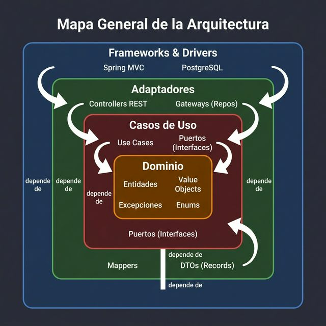
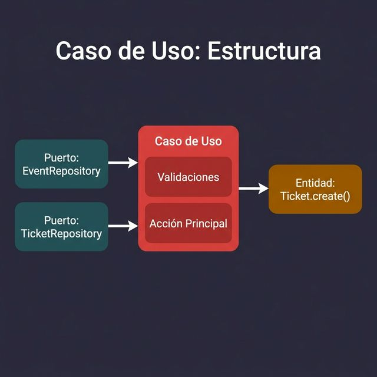
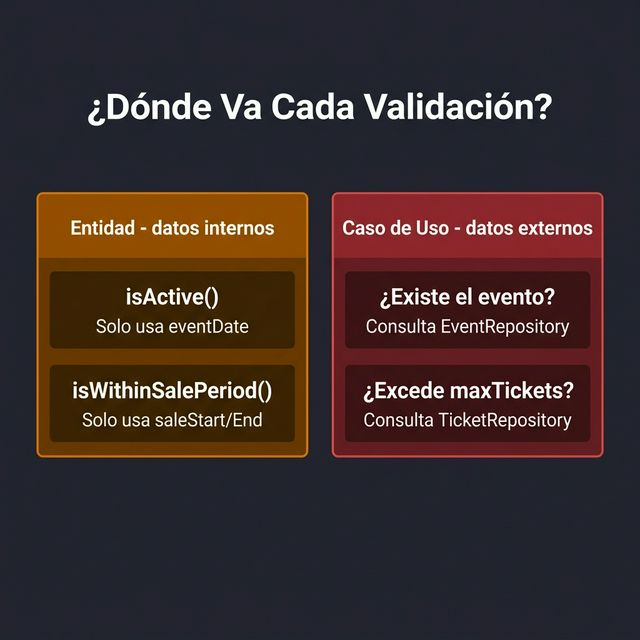
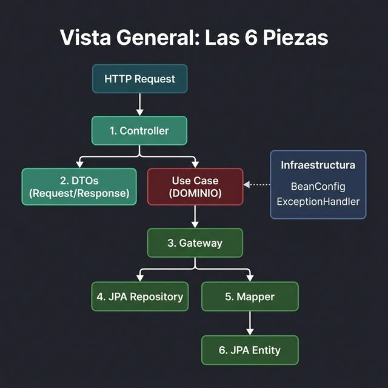

Del Requerimiento al Código — Caso de Estudio FairTicket
Del diagrama teórico a la implementación real.
En semanas anteriores se estudió qué es Clean Architecture. Hoy se aprenderá cómo se implementa capa por capa.
Se utilizará el proyecto FairTicket (plataforma de venta de boletas para eventos) como caso de estudio real.
Al finalizar, se comprenderán:
Una plataforma para gestionar eventos y la venta de boletas en línea.
Entidades del dominio:
Event — Eventos con categoría, periodo de venta y límites.User — Compradores y organizadores.Ticket — Boletas con precio, categoría y estado.Purchase — Agrupación de boletas compradas.Stack Tecnológico:

Esta es una prueba
Regla de dependencia: Las flechas siempre apuntan hacia adentro. El dominio nunca conoce las capas exteriores.
El núcleo puro del sistema.
Antes de escribir código, se deben responder 5 preguntas para cada entidad:
| # | Pregunta | Lo que se busca |
|---|---|---|
| 1 | ¿Cuáles son los datos esenciales? | Atributos mínimos |
| 2 | ¿Algún dato tiene reglas propias? | Detectar Value Objects |
| 3 | ¿Cómo se crea válidamente una instancia? | Factory Methods |
| 4 | ¿Qué preguntas de negocio responde la entidad? | Métodos de consulta |
| 5 | ¿Cómo se modifica respetando invariantes? | Mutación controlada |
Estas preguntas se aplican a cada entidad del sistema — no solo a la primera.
“El sistema debe permitir gestionar eventos. Un evento tiene nombre, descripción, lugar, fecha del evento, periodo de venta de boletas, una categoría (deportivo, musical o cultural), un límite máximo de boletas por usuario, el total de boletas disponibles y un organizador responsable.”
Se aplicarán las 5 preguntas a este requerimiento para construir la entidad Event.
Se extraen los sustantivos del requerimiento:
Además, toda entidad necesita:
UUID id)createdAt, updatedAt)Un campo que tiene validación, formato o más de un componente merece ser un Value Object.
Ejemplo 1 — Email (no es cualquier String):
// ❌ Primitive Obsession
private String email; // ¿Quién valida que sea un email real?
// ✅ Value Object con validación en construcción
public record Email(String value) {
public Email { // Compact constructor del record
if (value == null || !value.matches("^[\\w.-]+@[\\w.-]+\\.[a-zA-Z]{2,}$")) {
throw new IllegalArgumentException("Invalid email: " + value);
}
}
}Si el dato es inválido, no se puede construir el objeto. Datos corruptos nunca entran al dominio.
Ejemplo 2 — Dinero (no es solo un double):
// ❌ ¿Cuánto es 50000? ¿Pesos? ¿Dólares? ¿Puede ser negativo?
private double price;
// ✅ Value Object que encapsula cantidad + moneda + validación
public record Money(double amount, String currency) {
public Money {
if (amount < 0) throw new IllegalArgumentException("Amount cannot be negative");
if (currency == null || currency.isBlank()) throw new IllegalArgumentException("Currency required");
}
// Factory method descriptivo
public static Money cop(double amount) { return new Money(amount, "COP"); }
}
Money.cop(50000)es auto-documentado: “50 mil pesos colombianos”.
Cuando un campo solo puede tener un número fijo de valores posibles, un String no es suficiente.
El proyecto FairTicket usa enums para:
EventCategory (DEPORTIVO, MUSICAL, CULTURAL)TicketStatus (PENDING, PURCHASED, CANCELLED)PurchaseStatus (PENDING, COMPLETED, CANCELLED)Role (ADMIN, ORGANIZER, BUYER)// ❌ Constructor crudo — ¿quién genera el id? ¿y createdAt?
var event = new Event(null, "Concierto", "Desc", ...);
// ✅ Factory Method — auto-documentado y garantiza estado válido
var event = Event.create("Concierto", "Descripción", "Teatro UPB",
eventDate, saleStart, saleEnd, EventCategory.MUSICAL, 4, 200, organizerId);El factory method asigna lo que el llamador no debe decidir:
public static Event create(String name, String description, String venue,
LocalDateTime eventDate, LocalDateTime saleStartDate, LocalDateTime saleEndDate,
EventCategory category, int maxTicketsPerUser, int totalTickets, UUID organizerId) {
return new Event(
UUID.randomUUID(), // ← ID autogenerado
name, description, venue, eventDate, saleStartDate, saleEndDate,
category, maxTicketsPerUser, totalTickets, organizerId,
LocalDateTime.now(), // ← createdAt automático
LocalDateTime.now() // ← updatedAt automático
);
}Si un cálculo depende solo de los datos internos de la entidad, es un método de la entidad.
Si necesita datos de otra entidad o del repositorio → pertenece al Caso de Uso, no a la entidad.
Los setters individuales permiten modificaciones parciales que dejan la entidad en estado inconsistente. Se prefieren métodos con nombre semántico:
public void update(String name, String description, String venue,
LocalDateTime eventDate, LocalDateTime saleStartDate, LocalDateTime saleEndDate,
EventCategory category, int maxTicketsPerUser, int totalTickets) {
this.name = name;
this.description = description;
this.venue = venue;
this.eventDate = eventDate;
this.saleStartDate = saleStartDate;
this.saleEndDate = saleEndDate;
this.category = category;
this.maxTicketsPerUser = maxTicketsPerUser;
this.totalTickets = totalTickets;
this.updatedAt = LocalDateTime.now(); // ← automático
}El campo
updatedAtse actualiza automáticamente. El llamador no puede olvidarlo.
Event.java@Getter
@AllArgsConstructor
public class Event {
private UUID id;
private String name;
private String description;
private String venue;
private LocalDateTime eventDate;
private LocalDateTime saleStartDate;
private LocalDateTime saleEndDate;
private EventCategory category;
private int maxTicketsPerUser;
private int totalTickets;
private UUID organizerId; // Referencia por ID, no por objeto
private LocalDateTime createdAt;
private LocalDateTime updatedAt;
public static Event create(...) { ... } // Pregunta 3
public boolean isWithinSalePeriod() { ... } // Pregunta 4
public boolean isActive() { ... } // Pregunta 4
public void update(...) { ... } // Pregunta 5
}@Entity, @Table, @Column (JPA)@Service, @Component (Spring)@RestController, @RequestBody (Web).save(), .delete() (Repositorio)toJson(), fromRequest() (Serialización)@Getter, @AllArgsConstructor)La entidad solo conoce las reglas del negocio. No sabe cómo se guarda ni cómo llega la petición HTTP.
UUID organizerId y no User organizer?Ventajas:
Las reglas de negocio no lanzan errores técnicos genéricos. Se modela una jerarquía cerrada:
La palabra clave sealed permite al compilador verificar que todos los subtipos se manejen en un switch. Si se añade una nueva excepción sin actualizarlo, el compilador advierte.
Definiendo el qué sin decir el cómo.
La entidad Event necesita persistirse y recuperarse, pero no puede depender de JPA ni de PostgreSQL.
La solución: una interfaz (contrato) que define qué operaciones se necesitan:
Observaciones clave:
@Repository, sin JPA, sin Spring.Event, UUID), nunca tipos de infraestructura.| Pregunta | Método resultante |
|---|---|
| ¿Necesito guardar la entidad? | save(Event) |
| ¿Necesito buscar por ID? | findById(UUID) |
| ¿Necesito listar todas? | findAll() |
| ¿Necesito buscar por criterio de negocio? | findByOrganizerId(UUID) |
| ¿Necesito eliminar? | deleteById(UUID) |
| ¿Necesito un cálculo agregado? | countByBuyerIdAndEventId(...) |
El puerto nace del requerimiento del caso de uso, no de un CRUD genérico.
El TicketRepository tiene un método que nace de una regla de negocio:
El método countByBuyerIdAndEventId existe porque el caso de uso BuyTicketUseCase necesita saber cuántos tickets ya compró un usuario para un evento, y así validar el límite maxTicketsPerUser.
El director de orquesta.
Un caso de uso coordina entidades, puertos y reglas de negocio para cumplir un requerimiento específico.

Características:
execute(...) por caso de uso (SRP).| # | Pregunta | Lo que define |
|---|---|---|
| 1 | ¿Cuál es la acción exacta? | El nombre: BuyTicketUseCase |
| 2 | ¿Qué datos de entrada necesita? | Parámetros de execute() |
| 3 | ¿Qué puertos (repositorios) consulta? | Dependencias private final |
| 4 | ¿Qué validaciones ejecuta antes? | Guard clauses (if-throw) |
| 5 | ¿Cuál es la acción principal? | Creación/modificación de entidades |
| 6 | ¿Qué retorna al llamador? | Tipo de retorno de execute() |
BuyTicketUseCase“Un comprador puede adquirir boletas para un evento. Se debe verificar que el evento esté activo, que esté dentro del periodo de venta y que no se exceda el límite de boletas por usuario.”
@RequiredArgsConstructor
public class BuyTicketUseCase {
private final TicketRepository ticketRepository; // Puerto 1
private final EventRepository eventRepository; // Puerto 2
public List<Ticket> execute(UUID buyerId, UUID eventId, TicketCategory category,
Money pricePerTicket, int quantity) {
// Validaciones + acción principal...
}
}Solo inyecta los puertos que realmente usa. No
UserRepositoryniPurchaseRepository.
// VALIDACIÓN 1: ¿El evento existe?
Event event = eventRepository.findById(eventId)
.orElseThrow(() -> new DomainException("Event not found"));
// VALIDACIÓN 2: ¿Está activo? (método de la entidad)
if (!event.isActive()) {
throw new EventNotActiveException("Event is not active anymore");
}
// VALIDACIÓN 3: ¿Estamos en periodo de venta? (método de la entidad)
if (!event.isWithinSalePeriod()) {
throw new EventSaleClosedException("Event is not within sale period");
}
// VALIDACIÓN 4: ¿No excede el límite? (requiere dato del repositorio)
int currentTickets = ticketRepository.countByBuyerIdAndEventId(buyerId, eventId);
if (currentTickets + quantity > event.getMaxTicketsPerUser()) {
throw new MaxTicketsExceededException(
"Cannot buy more tickets than allowed per user: " + event.getMaxTicketsPerUser());
}
Si el cálculo usa solo datos internos de la entidad → método de la entidad.
Si necesita datos externos (repositorios, otras entidades) → caso de uso.
// Acción principal: crear las boletas
List<Ticket> newTickets = IntStream.range(0, quantity)
.mapToObj(i -> {
String code = "TICKET-" + UUID.randomUUID().toString()
.substring(0, 8).toUpperCase();
return Ticket.create(code, pricePerTicket, category, buyerId, eventId);
})
.collect(Collectors.toList());
// Persistir y retornar
return newTickets.stream()
.map(ticketRepository::save) // Usa el puerto para guardar
.collect(Collectors.toList());Observaciones:
Ticket se crea usando el factory method de la entidad (no new Ticket(...)).ticketRepository), no llamando a JPA directamente.List<Ticket> — tipos del dominio, nunca DTOs ni entidades JPA.@Service, @ComponentHttpServletRequest, @RequestBodyJpaRepository, EntityManagerResponseEntity, HttpStatusprivate final interfaces)@RequiredArgsConstructor (Lombok)Si mañana se reemplaza REST por GraphQL, el caso de uso no cambia ni una línea.
Las 6 piezas de conexión con el mundo real.

upb.edu.co.fairticket
├── domain/ ← CAPAS INTERNAS (Java puro)
│ ├── model/
│ │ ├── Event.java, User.java, Ticket.java, Purchase.java
│ │ ├── enums/ (EventCategory, TicketStatus, Role, ...)
│ │ └── valueobjects/ (Email, Money)
│ ├── exception/
│ │ ├── DomainException.java (sealed class)
│ │ └── EventNotActiveException.java, UserNotFoundException.java, ...
│ ├── port/
│ │ └── EventRepository.java, UserRepository.java, ...
│ └── usecase/
│ ├── event/ (CreateEventUseCase, EditEventUseCase, ...)
│ ├── ticket/ (BuyTicketUseCase, CancelTicketUseCase, ...)
│ └── ...
│
├── adapter/ ← CAPAS EXTERNAS (Spring, JPA)
│ ├── in/rest/
│ │ ├── EventController.java, TicketController.java, ...
│ │ └── dto/ (request/ y response/)
│ └── out/persistence/
│ ├── entity/ (EventJpaEntity.java, ...)
│ ├── repository/ (EventJpaRepository.java, ...)
│ ├── mapper/ (EventPersistenceMapper.java, ...)
│ └── gateway/ (EventRepositoryGateway.java, ...)
│
└── infrastructure/ ← CONFIGURACIÓN
├── config/ (BeanConfig.java)
└── exception/ (GlobalExceptionHandler.java)@Entity
@Table(name = "events")
@Getter @Setter @NoArgsConstructor @AllArgsConstructor
public class EventJpaEntity {
@Id
private UUID id; // Sin @GeneratedValue
private String name;
@Column(length = 1000)
private String description;
private String venue;
private LocalDateTime eventDate;
private LocalDateTime saleStartDate;
private LocalDateTime saleEndDate;
@Enumerated(EnumType.STRING) // "MUSICAL" en vez de 0
private EventCategory category;
private int maxTicketsPerUser;
private int totalTickets;
private UUID organizerId;
private LocalDateTime createdAt;
private LocalDateTime updatedAt;
}| Decisión | ¿Por qué? |
|---|---|
Sin @GeneratedValue |
El UUID lo genera el factory method del dominio, no la BD. |
@Enumerated(EnumType.STRING) |
ORDINAL guarda números (0, 1, 2) que se corrompen al reordenar. |
| Value Objects aplanados | Money → double priceAmount + String priceCurrency. JPA no persiste records. |
Sin @ManyToOne / @OneToMany |
IDs planos respetan los límites de agregados del DDD. |
@Getter @Setter @NoArgsConstructor |
JPA necesita getters/setters y constructor vacío (reflexión). |
Regla: La entidad JPA es un modelo de datos, no de negocio. Vive en la capa exterior y nunca entra al dominio.
save, findById, findAll, deleteById ya existen en JpaRepository. Solo se declaran los métodos custom usando la convención de Derived Queries (Spring genera el SQL automáticamente a partir del nombre del método).
Ejemplo más complejo — TicketJpaRepository:
public class EventPersistenceMapper {
private EventPersistenceMapper() {} // Utility class, no instanciable
// JPA → Dominio: RECONSTRUIR los Value Objects
public static Event toDomain(EventJpaEntity entity) {
return new Event(
entity.getId(), entity.getName(), entity.getDescription(), entity.getVenue(),
entity.getEventDate(), entity.getSaleStartDate(), entity.getSaleEndDate(),
entity.getCategory(), entity.getMaxTicketsPerUser(), entity.getTotalTickets(),
entity.getOrganizerId(), entity.getCreatedAt(), entity.getUpdatedAt()
);
}
// Dominio → JPA: DESCOMPONER los Value Objects
public static EventJpaEntity toJpa(Event event) {
return new EventJpaEntity(
event.getId(), event.getName(), event.getDescription(), event.getVenue(),
event.getEventDate(), event.getSaleStartDate(), event.getSaleEndDate(),
event.getCategory(), event.getMaxTicketsPerUser(), event.getTotalTickets(),
event.getOrganizerId(), event.getCreatedAt(), event.getUpdatedAt()
);
}
}Cuando se cargan datos desde la base de datos, no se copian campos, se rehidratan los Value Objects:
// En TicketPersistenceMapper.toDomain():
public static Ticket toDomain(TicketJpaEntity entity) {
return new Ticket(
entity.getId(),
entity.getCode(),
new Money(entity.getPriceAmount(), entity.getPriceCurrency()), // ← Rehidratar VO
entity.getCategory(),
entity.getPurchaseId(),
entity.getBuyerId(),
entity.getEventId(),
entity.getPurchasedAt(),
entity.getStatus()
);
}Al llamar new Money(amount, currency), el compact constructor ejecuta sus validaciones. Si la BD contiene un monto negativo, el error se detecta aquí, no silenciosamente después.
@Repository
@RequiredArgsConstructor
public class EventRepositoryGateway implements EventRepository { // ← implementa el PUERTO
private final EventJpaRepository jpaRepository;
@Override
public Event save(Event event) {
return EventPersistenceMapper.toDomain( // 3. JPA → Dominio
jpaRepository.save(EventPersistenceMapper.toJpa(event)) // 2. Persiste en BD
); // 1. Dominio → JPA
}
@Override
public Optional<Event> findById(UUID id) {
return jpaRepository.findById(id).map(EventPersistenceMapper::toDomain);
}
@Override
public List<Event> findAll() {
return jpaRepository.findAll().stream()
.map(EventPersistenceMapper::toDomain)
.toList();
}
} Event (dominio) EventJpaEntity INSERT INTO events... EventJpaEntity (persistido) Event (dominio)
┌──────────────┐ ┌──────────────┐ ┌─────────────────────┐ ┌────────────────────────┐ ┌──────────────┐
│ Entidad de │──toJpa()──▶│ Modelo JPA │──save()──▶│ Base de Datos │──resultado──▶│ Modelo JPA │──toDomain()──▶│ Entidad de │
│ Dominio │ │ (persistencia)│ │ (PostgreSQL) │ │ (ya guardado) │ │ Dominio │
└──────────────┘ └──────────────┘ └─────────────────────┘ └────────────────────────┘ └──────────────┘| Paso | Entrada | Transformación | Salida |
|---|---|---|---|
| 1 | Event (dominio) |
toJpa() |
EventJpaEntity |
| 2 | EventJpaEntity |
jpaRepo.save() |
INSERT INTO events... |
| 3 | Resultado BD | — | EventJpaEntity (persistido) |
| 4 | EventJpaEntity |
toDomain() |
Event (dominio, de vuelta) |
El gateway siempre recibe y retorna tipos del dominio. El tipo JPA nunca escapa fuera del gateway.
Request: lo que el cliente envía (solo datos que él decide):
Response: lo que se devuelve (incluye datos generados por el sistema):
public record EventResponse(
UUID id, String name, String description, String venue, LocalDateTime eventDate,
LocalDateTime saleStartDate, LocalDateTime saleEndDate, String category,
int maxTicketsPerUser, int totalTickets, UUID organizerId,
LocalDateTime createdAt, LocalDateTime updatedAt
) {
public static EventResponse from(Event event) {
return new EventResponse(event.getId(), event.getName(), /* ... */
event.getCategory().name(), /* Enum → String */ /* ... */);
}
}@RestController
@RequestMapping("/api/events")
@RequiredArgsConstructor
public class EventController {
private final CreateEventUseCase createEventUseCase; // Inyecta Use Cases,
private final EditEventUseCase editEventUseCase; // no servicios genéricos
private final DeleteEventUseCase deleteEventUseCase;
@PostMapping
public ResponseEntity<EventResponse> create(@RequestBody CreateEventRequest request) {
var event = createEventUseCase.execute(request.name(), request.description(),
request.venue(), request.eventDate(), request.saleStartDate(),
request.saleEndDate(), request.category(),
request.maxTicketsPerUser(), request.totalTickets(), request.organizerId());
return ResponseEntity.status(HttpStatus.CREATED).body(EventResponse.from(event));
}
@DeleteMapping("/{id}")
public ResponseEntity<Void> delete(@PathVariable UUID id) {
deleteEventUseCase.execute(id);
return ResponseEntity.noContent().build(); // 204 No Content
}
}| Paso | Acción | Ejemplo |
|---|---|---|
| 1 🟢 | Deserializa la petición HTTP → DTOs de Java | @RequestBody CreateEventRequest request |
| 2 🟡 | Traduce tipos del DTO a tipos del dominio | TicketCategory.valueOf(request.category()) |
| 3 🔴 | Envuelve el resultado en ResponseEntity con código HTTP |
ResponseEntity.status(HttpStatus.CREATED) |
Códigos HTTP semánticos:
| Operación | Código HTTP | Ejemplo |
|---|---|---|
POST exitoso |
201 Created |
ResponseEntity.status(HttpStatus.CREATED) |
GET / PUT exitoso |
200 OK |
ResponseEntity.ok() |
DELETE exitoso |
204 No Content |
ResponseEntity.noContent().build() |
| Recurso no encontrado | 404 Not Found |
ResponseEntity.notFound().build() |
Regla: Si el controller tiene un
ifque evalúa reglas de negocio, algo está mal. Eso pertenece al Use Case.
El TicketController muestra conversiones más interesantes:
@PostMapping("/buy")
public ResponseEntity<List<TicketResponse>> buy(
@RequestParam UUID buyerId, @RequestBody BuyTicketRequest request) {
var tickets = buyTicketUseCase.execute(
buyerId,
request.eventId(),
TicketCategory.valueOf(request.category().toUpperCase()), // String → Enum
Money.cop(request.price()), // double → Value Object
request.quantity()
);
return ResponseEntity.status(HttpStatus.CREATED)
.body(tickets.stream().map(TicketResponse::from).toList());
}La traducción de tipos ocurre en el controller:
"VIP" (String del JSON) → TicketCategory.VIP (Enum del dominio)50000 (double del JSON) → Money.cop(50000) (Value Object del dominio)@Service?// ✅ Se registran desde FUERA, en la capa de infraestructura
@Configuration
public class BeanConfig {
@Bean
public BuyTicketUseCase buyTicketUseCase(
TicketRepository ticketRepository, // Spring inyecta el Gateway
EventRepository eventRepository) { // Spring inyecta el Gateway
return new BuyTicketUseCase(ticketRepository, eventRepository);
}
@Bean
public CreateEventUseCase createEventUseCase(EventRepository eventRepository) {
return new CreateEventUseCase(eventRepository);
}
// ... un @Bean por cada Use Case
}El dominio queda 100% libre de Spring. Si se migra a Quarkus, las clases de dominio no cambian.
@RestControllerAdvice
public class GlobalExceptionHandler {
@ExceptionHandler(DomainException.class)
public ResponseEntity<ErrorResponse> handleDomainException(DomainException ex) {
return switch (ex) {
case UserNotFoundException e -> ResponseEntity.status(404).body(new ErrorResponse(e.getMessage()));
case TicketNotAvailableException e -> ResponseEntity.status(404).body(new ErrorResponse(e.getMessage()));
case EventNotActiveException e -> ResponseEntity.status(409).body(new ErrorResponse(e.getMessage()));
case EventSaleClosedException e -> ResponseEntity.status(409).body(new ErrorResponse(e.getMessage()));
case MaxTicketsExceededException e -> ResponseEntity.status(400).body(new ErrorResponse(e.getMessage()));
case InvalidPurchaseException e -> ResponseEntity.status(400).body(new ErrorResponse(e.getMessage()));
default -> ResponseEntity.status(422).body(new ErrorResponse(ex.getMessage()));
};
}
@ExceptionHandler(IllegalArgumentException.class)
public ResponseEntity<ErrorResponse> handleIllegalArgument(IllegalArgumentException ex) {
return ResponseEntity.status(400).body(new ErrorResponse(ex.getMessage()));
}
}| Excepción de Dominio | Código HTTP | Semántica |
|---|---|---|
UserNotFoundException |
404 |
El recurso no existe |
TicketNotAvailableException |
404 |
El recurso no existe |
EventNotActiveException |
409 |
El recurso existe pero su estado impide la operación |
EventSaleClosedException |
409 |
El recurso existe pero su estado impide la operación |
MaxTicketsExceededException |
400 |
La petición viola una regla de negocio |
InvalidPurchaseException |
400 |
La petición viola una regla de negocio |
IllegalArgumentException |
400 |
Datos de entrada inválidos (VOs: email malformado, monto negativo) |
| Subtipo no mapeado | 422 |
Fallback para futuros subtipos |
Nunca se pone
try-catchen los controllers. El@RestControllerAdvicelo maneja centralizadamente para todos.
¿Cómo viaja una petición a través de todas las capas?
| # | Componente | Acción | Detalle |
|---|---|---|---|
| 1 | Cliente HTTP | POST /api/tickets/buy |
Envía JSON con datos de compra |
| 2 | TicketController | Deserializa BuyTicketRequest |
"VIP" → TicketCategory.VIP, 50000 → Money.cop() |
| 3 | TicketController | Llama al Use Case | execute(buyerId, eventId, category, price, qty) |
| 4 | BuyTicketUseCase | Buscar evento | eventRepository.findById(eventId) |
| 5 | EventGateway | Consulta BD | SELECT * FROM events WHERE id = ? |
| 6 | EventGateway | Convierte resultado | toDomain() → Event (dominio) |
| 7 | BuyTicketUseCase | Validación 1 | event.isActive() ✅ |
| 8 | BuyTicketUseCase | Validación 2 | event.isWithinSalePeriod() ✅ |
| 9 | BuyTicketUseCase | Validación 3 | countByBuyerIdAndEventId() → 1 (menor que maxTickets ✅) |
| 10 | BuyTicketUseCase | Crea boletas | Ticket.create() × cantidad |
| 11 | TicketGateway | Persiste | toJpa() → INSERT INTO tickets... → toDomain() |
| 12 | BuyTicketUseCase | Retorna | List<Ticket> al Controller |
| 13 | TicketController | Responde | TicketResponse.from(ticket) → 201 Created + JSON |
En el flujo anterior, la dirección de dependencia siempre apunta hacia adentro:
| Componente | Relación | Destino |
|---|---|---|
| Controller (adapter/in) | depende de → | Use Case (domain) |
| Gateway (adapter/out) | implementa → | Puerto (domain/port) |
| Use Case (domain) | usa → | Puerto (domain/port) |
| Use Case (domain) | usa → | Entidades (domain/model) |
| BeanConfig (infrastructure) | conecta → | Use Case + Gateway |
Dirección clave: Todas las flechas de dependencia apuntan hacia el dominio. El dominio nunca conoce a las capas exteriores.
El dominio NUNCA conoce a ninguna de las capas exteriores.
La guía definitiva de decisiones.
| Pregunta | Respuesta | Ubicación |
|---|---|---|
| ¿Es un dato con reglas propias? (email, dinero) | Value Object (record con validación) | domain/model/valueobjects/ |
| ¿Es un conjunto finito de estados? | Enum | domain/model/enums/ |
| ¿Es un concepto de negocio con identidad? | Entidad (class con factory method) | domain/model/ |
| ¿Un error de regla de negocio? | Excepción sealed | domain/exception/ |
| ¿Qué datos se guardan/cargan? | Puerto (interface) | domain/port/ |
| ¿Lógica que necesita datos externos? | Caso de Uso | domain/usecase/ |
| ¿Cómo se guardan en PostgreSQL? | JPA Entity + Repo + Mapper + Gateway | adapter/out/persistence/ |
| ¿Cómo se reciben/envían datos por HTTP? | Controller + DTOs | adapter/in/rest/ |
| ¿Cómo se conecta Spring con el dominio? | BeanConfig | infrastructure/config/ |
| ¿Cómo se traducen errores a HTTP? | GlobalExceptionHandler | infrastructure/exception/ |
“Se requiere agregar una nueva funcionalidad: Reseñas de Eventos. Un comprador que haya asistido a un evento puede dejar una reseña con un comentario de texto (máx. 500 caracteres) y una calificación (1 a 5 estrellas).”
Usando las preguntas guía de esta presentación, diseñar (sin implementar aún):
Review — ¿Qué atributos? ¿Hay Value Objects? ¿Cuál es el factory method?ReviewRepository — ¿Qué operaciones necesita?CreateReviewUseCase — ¿Qué validaciones? ¿Qué repositorios inyecta?Rating.ReviewComment.UUID buyerId (referencia por ID).UUID eventId (referencia por ID).Posibles validaciones:
eventRepository.findById()ticketRepository.findByBuyerIdAndEventId()!event.isActive() (solo se puede reseñar después del evento)“La arquitectura no se trata de hacer que el sistema funcione. Se trata de hacer que el sistema sea fácil de cambiar.”
— Robert C. Martin
Clean Architecture no es una religión, es una herramienta. Se debe utilizar cuando el costo de mantenimiento futuro supere el costo de implementación actual.